In this tutorial we will use Tkinter to build a graphical user interface that we can use to maintain a simple phone list. On the way we'll play around with several Tkinter widgets thru the Python interactive prompt, hopefully getting a good feel for how all the pieces work together. Then we'll study a functional event driven GUI program.
It's best if you follow along with Python in another window and watch the widgets come and go and move around. Make sure you are using the ordinary python.exe executable and not one of the IDE like IDLE or PythonWin. Sometimes the graphics they are doing will interfere with the graphics we are creating resulting in some odd behaviour.
The amount of Tk that is introduced in this tutorial is small but surprisingly effective for many applications. However, you will also want to have a good reference to find out about other widgets such as check boxes and radio buttons as well as how to extend the functionality of the widgets being introduced here.
Playing with buttons
The first thing to do is to import the Tkinter module. Generally this is done by importing the module into our local namespace so that we can use the classes and constants by their names (like Label, Button, TOP) instead of having to constantly qualify everything (like Tkinter.Label, Tkinter.Button, Tkinter.TOP). So lets do that first.
>>> from Tkinter import *
Now if this produced an error message it means that either Tk/Tcl is not installed on your system or that Python is not linked to it. You will need to fix that before going on and that will probably involve your system administrator. Otherwise, if all is quiet, try the first command which will create a window and assign it to the variable "win".
>>> win=Tk()
You should now have a small window on your screen with "tk" in the title bar. Let's create a couple of buttons for this window
>>> b1 = Button(win,text="One") >>> b2 = Button(win,text="Two")
The class Button takes the parent window as the first argument. As we will see later other objects, such as frames, may also act as parents. The rest of the arguments are passed by keyword and are all optional.
You might be surprised that the buttons did not appear in the window. They must first be placed with one of the so called geometry managers. The two most common ones are "pack" and "grid".
Using the Pack Manager
With "pack" you tell your widget to pack itself into its parent. You may specify a side (TOP, LEFT, RIGHT, BOTTOM) and your widget will be packed against either the parents wall or a previous widget with the same packing. If you don't specify a side the default is TOP. Do the following.
>>> b1.pack() >>> b2.pack()
Notice that after the first command the button is placed in the window and the window itself is shrunk to the size of the button. When the second button is packed the window is expanded to accomodate it. The default TOP stacked them vertically in the order they were packed.
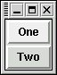
Now try the following two commands.
>>> b2.pack(side=LEFT) >>> b1.pack(side=LEFT)
Now the buttons look like
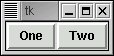
In practice the pack geometry manager is generally used in one of these two modes to place a set of widgets in either a vertical column or horizontal row.
Our buttons look a little squished. We can fix that by packing them with a little padding. "padx" adds pixels to the left and right and "pady" adds them to the top and bottom.
>>> b1.pack(side=LEFT,padx=10) >>> b2.pack(side=LEFT,padx=10)
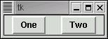
I suggest you create a couple more buttons and play with BOTTOM and RIGHT to get a good feel for the "pack" manager.
Using the Grid Manager
Another way to place widgets (buttons, labels and whatnot) is in a table or grid. Here the parent window is divided into rows and columns and each widget is placed in a given cell. The grid manager keeps track of how many row and columns are actually needed and fills out the window accordingly. It also keeps track of how wide each column, and how tall each row must be to accomodate the largest widget in that row or column. Rows do not all have to be the same height and columns do not have to all be the same width.
Let's make a new window with the same buttons but this time lay them out in a two by two grid.
>>> win = Tk() >>> b1 = Button(win,text="One") >>> b2 = Button(win,text="Two") >>> b1.grid(row=0, column=0) >>> b2.grid(row=1, column=1)
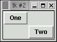
You can see that some empty space is left since nothing was put into row 0, column 1 or into row1, column 0. Let's use this as an oppurtunity to look at a new widget type.
A label widget is used to place text into the window and is very simple.
>>> l = Label(win, text="This is a label") >>> l.grid(row=1,column=0)
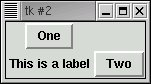
Notice how the label pushed the width of column 0 out to accomodate the text.
More complex layouts.
A frame is a widget whose sole purpose is to contain other widgets. Groups of widgets, whether packed or placed in a grid, may be combined into a single Frame. Frames may then be packed with other widgets and frames. This feature lets us create just about any kind of layout. As an example let's place a lable over 3 buttons in a row. We'll first pack the buttons into a frame horizontally and then pack the label and frame vertically in the window.
>>> win = Tk() >>> f = Frame(win) >>> b1 = Button(f, "One") >>> b2 = Button(f, "Two") >>> b3 = Button(f, "Three") >>> b1.pack(side=LEFT) >>> b2.pack(side=LEFT) >>> b3.pack(side=LEFT) >>> l = Label(win,"This label is over all buttons") >>> l.pack() >>> f.pack()
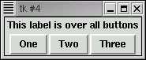
In addition to pack and grid there is a place method to position a widget at a precise location within a frame or window. It is not often used because it is frankly easier to let pack and grid just spread things out as needed, especially if you use the mouse to shrink or expand a window.
There are other keyword arguments that are common when using either pack or grid. We saw padx and pady above. With grids there is a "sticky" parameter which takes a map coordinate like N, E, S, W, NE, etc. If the grid cell is larger than your widget because a larger widget is in the same row or column, sticky helps you put the widget where you want it in the cell.
At this point you might want to check out your reference guide and play with other keyword parameters from the interactive prompt in order to get a good feel for how they function.
Bringing the buttons to life.
You may have tried clicking the buttons. If so, you noticed that they highlight and depress fine but they just don't do anything. Let's fix that.
As we've seen, widgets are objects and have methods. We've been using their pack and grid methods. Now we'll use a new method, "configure".
Any keyword argument that we can pass when creating a widget may also be passed to its "configure" method. For example, if we do the following
>>> b1.configure(text="Uno")
suddenly our window looks like
Buttons are tied to callback functions using the parameter "command" either when the button is created or with configure. Let's start by defining a function that simply prints a message
>>> def but1() : print "Button one was pushed" ... >>> b1.configure(command=but1)
Now when we click button "Uno" the message is printed.
Entry widgets
To input text from the user we use an entry widget. Just as in the case of buttons we need some way to communicate with the entry widget, in this case to set and retrieve text. This is done with a special Tkinter object called a StringVar that simply holds a string of text and allows us to set its contents and read it (with get). Let's start with a clean window.
>>> win = Tk() >>> v = StringVar() >>> e = Entry(win,textvariable=v) >>> e.pack()
Now let's type "this is a test" into the entry and then retrieve it from our linked StringVar object
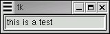
>>> v.get() "this is a test"
We can also set text into our StringVar object and have it appear in the entry widget.
>>> v.set("this is set from the program")
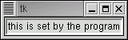
The Listbox widget
Our last widget in the project will let us have a menu of items to choose from. A listbox is created with the following command (after opening a window). The "height" parameter limits how many lines will show.
>>> win = Tk() >>> lb = Listbox(win, height=3) >>> lb.pack() >>> lb.insert(END,"first entry") >>> lb.insert(END,"second entry") >>> lb.insert(END,"third entry") >>> lb.insert(END,"fourth entry")
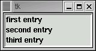
The fourth entry doesn't show since the listbox is set to just 3 lines.
Items in the listbox may be also inserted not only at the end (END) but also at the begining or even the middle. They may also be deleted. In fact we'll use the command "lb.delete(0,END)" later to clear the listbox.
A listbox may be used in conjunction with a scroll bar. Let's start by making a scroll bar and packing it next to the list box.
>>> sb = Scrollbar(win,orient=VERTICAL) >>> sb.pack(side=LEFT,fill=Y)
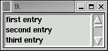
This looks good but if you operate the scroll bar you'll see that it doesn't do anything yet. The scroll bar and the list box need to know about each other. This is done in a manner similar to how we tied buttons to call back functions. Two calls are needed, one to tell each about the other.
>>> sb.configure(command=lb.yview) >>> lb.configure(yscrollcommand=sb.set)
Now manipulate the scroll bar and see the listbox respond.
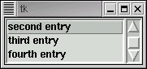
If you have selected an item in the listbox, the method curselection will return it for you. Actually it returns a tuple of items selected. It is possible to configure the listbox to allow multiple items to be selected together. An empty tuple is returned if no item is selected. Otherwise the tuple contains the index(es) of the selected items. (but as strings!)
For example, click on the 3rd item and do the following. In typical Python fashion indexes start at zero.
>>> lb.curselection()
('2',)
Putting it all together.
Our phone list editor uses all of the features discussed so far plus a few more that we'll touch on. Here is a view of the running application.
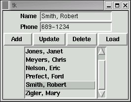
Now would be a good time to bring to bring up the python source in another window or make a printout. Click here to view the source. Click here to see the initial phone list.
The variable "phonelist" is a list of name/phone number pairs. As we work with the application pair entries will be added, modified and deleted.
The first thing the program does is call makeWindow, returning a reference to it which is stored in the variable "win". Looking at the code in the function "makeWindow" we can see all the widgets talked about above. The widgets are set into three frames which are then packed vertically.
The top frame is a 2x2 grid for the name and phone entry fields and labels to the left of them. Notice the rather strange form of the call
Label(frame1, text="Name").grid(row=0, column=0, sticky=W)
Here we create a label and immediately "grid" it into row=0, column=0. We loose all reference to it but frame1 has it tucked away. This is a very common way to define widgets when once they are created and set in their parent, we need no further contact with them.
Notice that two globals, "nameVar" and "phoneVar" reference StringVar objects that are tied to the Entry widgets "name" and "phone".
The second frame contains the 4 buttons packed left to right. Each is tied to a callback function which we'll discuss shortly. Here we've assigned each button to a variable (like "b1") but since we don't access them later we could have done the same thing that we did with the label above.
Button(frame2,text=" Add ",command=addEntry).pack(side=LEFT)
Finally the listbox and its scrollbar are packed into their own frame3. The "fill" parameters guarentee that the scrollbar and listbox will be the same height and that the listbox (fill=BOTH) will expand to the full width of the parent window.
The function setSelect first sorts the phonelist (it may get out of sort order during modifcations to it) and then essentially writes it to the listbox.
Once the window is built and the listbox initially populated a new function win.mailoop() is called. This puts the program into the event driven mode where everything that happens, until the program exits, is due to callback functions, initiated in this program by clicking the buttons.
Run the program and click one of the names in the list box. Then click the Load button. The name and phone number of your selection should appear in the Entry widgets. Clicking the Load button activated the callback function LoadEntry which first accessed the index of your listbox selection (via function whichSelected()) and then accessed the data from the list "phonelist". Now modify the Entry widgets contents and click Update or Add. Play around also with the Delete function.
A little careful study should make this program completely understandable. But it is incomplete is several respects. Most glaringly, there is no way to save your changes when the window is closed! As an exercise, add a Save button and make it work. One possiblity is to have Save's callback write a new "phones.py" to import the next time the program is run. Another is to use the "pickle" module to store the contents of "phonelist" between runs.
In the followup to this study, we'll extend this program to use a MySQL database for storing the phone list. This will enable multiple people to modify the list concurrently.